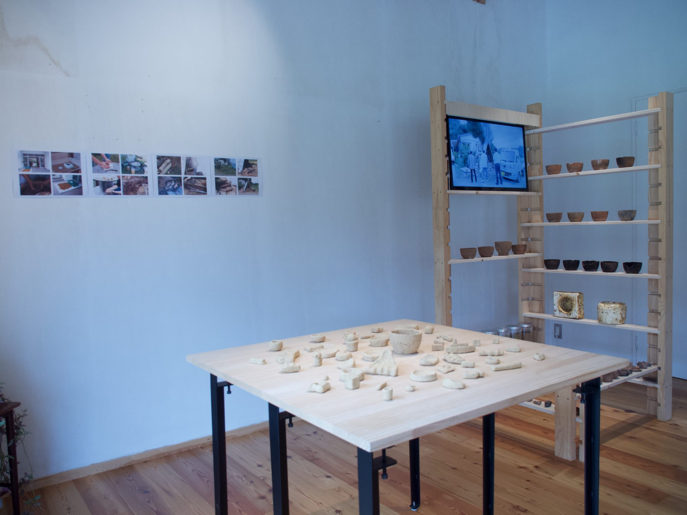

Role / Project Manager · Art Director
葛尾焼きプロジェクト
Katsurao-yaki Project
東日本大震災の被災地である福島県葛尾村にて、地域固有の新たな焼き物「葛尾焼き」を創出するプロジェクトを企画・主導。 単なる一過性のアート展示(消費される体験)ではなく、アーティストの介入がなくなった後も、 地域内で制作と経済が自律的に循環する「文化の継承」を見据えたプロジェクトマネジメントを実践しました。
A project conceived and led to create "Katsurao-yaki," a new ceramic native to Katsurao Village in Fukushima — an area still recovering from the 2011 disaster. Rather than a one-off art event consumed and forgotten, the work was managed with a longer view: building a cultural infrastructure in which production and economy continue to circulate within the community long after the artist's intervention has ended.
- ゼロからの体験設計とインフラ構築 / Designing experience and infrastructure from scratch
- 陶芸文化のなかった土地において、地元の土の採取から着手。村民の監修のもと、村内に炭窯を新設し、制作環境の土台を構築しました。
- In a place with no prior ceramic tradition, we began with the collection of local clay. Under the supervision of village residents, a new charcoal kiln was built within the village — establishing the very foundation of the practice.
- リスク管理とステークホルダーへの配慮 / Risk management & stakeholder care
- 放射線量に対する心理的・物理的懸念を払拭するため、土の検査を実施。安全性の数値をクリアした上で制作を行うという、地域の実情に即したリスクヘッジを徹底しました。
- To address both the physical and psychological concerns surrounding radiation, the clay was tested in advance. Production began only after the figures had cleared safety thresholds — a thorough hedging measure grounded in the village's lived reality.
- コミュニティ形成と技術継承 / Community building & transmission of craft
- 村民を含む 3 名に対して、成形から焼成までの技術を伝授するワークショップを複数回実施。さらに、未来の継承者のための映像資料を制作し、ナレッジの属人化を防ぎました。
- Multiple workshops were held for three participants — including a local resident — teaching the full process from forming to firing. A video archive was also produced for future inheritors, ensuring that the knowledge would not be locked within any single individual.
- 産業化を見据えたロードマップの策定 / Roadmap toward a self-sustaining industry
- 地域外の企業・団体との協働 (to B) や個人向け販売・EC 展開 (to C) を視野に入れ、新しい産業として自立するためのビジネスの座組みを構想・進行しています。
- A business framework is currently in development, designed with both external partners (B2B) and direct-to-consumer channels (B2C, e-commerce) in mind — the groundwork for Katsurao-yaki to stand as a new local industry on its own.